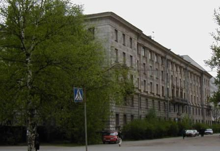

Самая лучшая кафедра на всем свете

Кафедра компьютерных систем и программных технологий (до 2009 года — кафедра автоматики и вычислительной техники АиВТ) ведет свою историю с 1933 г. и в настоящее время входит в состав Института компьютерных наук и технологий (ИКНТ, до 2015 г - Институт информационных технологий и управления ИИТУ, ранее - Факультет технической кибернетики ФТК) Санкт-Петербургского политехнического университета Петра Великого (СПбПУ).
Кафедра готовит бакалавров и магистров по направлению «Информатика и вычислительная техника».
В составе кафедры 3 профессора, доктора наук и более 25 доцентов, кандидатов наук.
Кафедра имеет 15 учебных лабораторий.
Научные направления связаны с проектированием программного обеспечения, разработкой компьютерных систем и систем управления.
Заведующий кафедрой - кандидат технических наук, доцент В.М. Ицыксон.
Научный руководитель кафедры — заслуженный работник высшей школы РФ, доктор технических наук, профессор В.Ф. Мелехин.